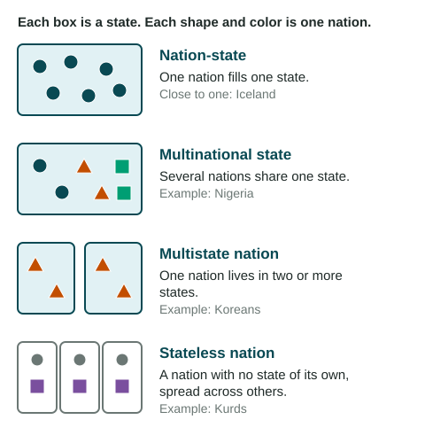
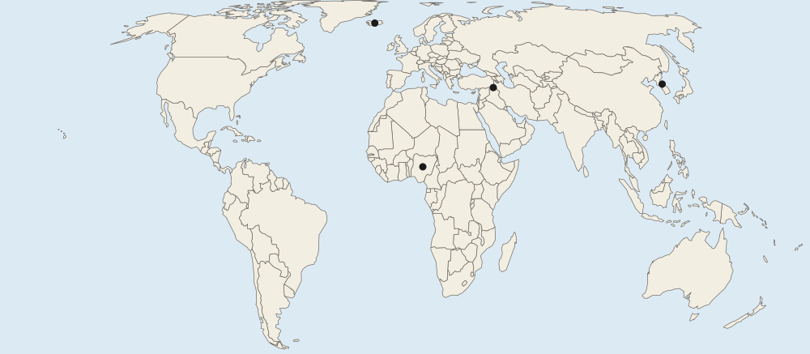

Introduction to Political Geography
States are the basic political units of the world: each has people, territory, a government and recognition by other states.
Part 1 · Hook
Why this matters
Part 2 · Before you start
What this builds on
Part 3 · Prerequisite check
Quick check before you start
1. What is culture, as geographers use the word?
- The shared beliefs, practices and traits of a group of people
- The physical landscape of a region
- A country's system of government
- The number of people in a place
Show the answer
Culture is the shared way of life of a group: language, religion, customs, food and more.
- Correct: The shared beliefs, practices and traits of a group of people:
- The physical landscape of a region:
- A country's system of government:
- The number of people in a place:
2. What is an ethnic group?
- People who share an ancestry and cultural traits such as language or religion
- People who live in the same city
- People of the same age
- People who hold the same job
Show the answer
Ethnicity is a cultural identity built on shared ancestry, language, religion and customs.
- Correct: People who share an ancestry and cultural traits such as language or religion:
- People who live in the same city:
- People of the same age:
- People who hold the same job:
Part 4 · See it
See it first

Part 5 · Step by step
How it works, step by step
- A group of people shares a language, history and homelandthey see themselves as one nation
- That nation wants to run its own affairsit seeks a state of its own, or powers inside an existing state
- State borders rarely match where nations livemany states hold several nations, and some nations have no state
Part 6 · Key ideas
Key ideas
- A state is a country: a permanent population, a defined territory, a government that controls it, and recognition by other states. A nation is a people who share a culture and see themselves as one.
- A nation-state is one nation in one state (Iceland comes close). A multinational state holds several nations (Nigeria, Belgium).
- A multistate nation lives in two or more states (Koreans). A stateless nation has no state of its own (the Kurds).
- An autonomous region governs many of its own affairs inside a state: Greenland in the Kingdom of Denmark, the Kurdistan Region in Iraq, Native American reservations in the United States.
Part 7 · Misconception
A common mistake
The wrong idea: A nation and a state are the same thing: both just mean a country.
What actually happens: A nation is a people; a state is a country with a government. The Kurds are a nation with no state, and Nigeria is one state with many nations.
Part 8 · Check yourself
Check yourself
Exam-style questions. Anything you miss goes into your review queue.
Map
Four places on a world map

1. Which mark lies in the homeland of a large stateless nation, a people spread across several states with no state of their own?
- Mark B
- Mark A
- Mark C
- Mark D
Show the answer
The Kurds live mainly where Türkiye, Iraq, Iran and Syria meet (mark B). They are a nation with no independent state, so they are a stateless nation.
- Correct: Mark B: Right: Mark B is where Türkiye, Iraq, Iran and Syria meet: the homeland of the Kurds, a nation with no state of its own.
- Mark A: Mark A is Iceland, where most people share one language and history and have their own state.
- Mark C: Mark C is Nigeria, a state that holds many nations, not a nation without a state.
- Mark D: Mark D is Korea: Koreans have two states of their own, so they are not stateless.
2. Which mark shows a state often described as close to a nation-state?
- Mark B
- Mark C
- Mark D
- Mark A
Show the answer
A nation-state is a state whose people are mostly one nation. Iceland is a common example, though no state is a perfect one.
- Mark B: Mark B is a region split among four states, not one state.
- Mark C: Nigeria holds hundreds of ethnic groups, so it is a multinational state.
- Mark D: The Korean Peninsula holds two states, not one.
- Correct: Mark A: Right: Iceland (mark A) is a small island state where most people share the Icelandic language and history.
3. One nation lives at mark D, yet the land there is split between two states. Which term describes that nation?
- A stateless nation
- A multinational state
- A multistate nation
- An autonomous region
Show the answer
At mark D, the Korean nation lives in two states, North Korea and South Korea. A nation that lives in two or more states is a multistate nation.
- A stateless nation: Koreans have states of their own; a stateless nation has none.
- A multinational state: That term is for one state holding many nations, the opposite case.
- Correct: A multistate nation: Right: Koreans form one nation divided between North Korea and South Korea.
- An autonomous region: That is a part of a state with its own powers, not a nation.
4. Which term best describes the state at mark C?
- A nation-state
- A multinational state
- A stateless nation
- A multistate nation
Show the answer
Mark C is Nigeria. Many nations (Hausa, Yoruba, Igbo and many more) share one state, so Nigeria is a multinational state.
- A nation-state: A nation-state is mostly one nation; Nigeria holds many.
- Correct: A multinational state: Right: Nigeria is home to Hausa, Yoruba, Igbo and hundreds of other groups in one state.
- A stateless nation: Mark C is a state, not a nation without one.
- A multistate nation: That term describes a nation, not a state.
5. In geography, how is a nation different from a state?
- A nation is a large state; a state is a small nation
- A nation is a people with a shared culture; a state is a country with a government and territory
- A nation has a government; a state is a group of people
- They mean the same thing in geography
Show the answer
A nation is a group of people who share a culture and see themselves as one people. A state is a political unit: a country with a population, territory, a government and recognition by other states.
- A nation is a large state; a state is a small nation: Size has nothing to do with it.
- Correct: A nation is a people with a shared culture; a state is a country with a government and territory: Right: This is the core difference: people versus a political unit.
- A nation has a government; a state is a group of people: This swaps the two meanings.
- They mean the same thing in geography: In everyday speech they are often mixed up, but geographers keep them apart.
6. A student wants to show that the Kurds live across parts of Türkiye, Iraq, Iran and Syria. At which scale of analysis is this pattern best seen?
- Regional scale
- Local scale
- National scale
- Global scale
Show the answer
The Kurdish homeland spans parts of four neighboring states in Southwest Asia, so the regional scale shows it best.
- Correct: Regional scale: Right: The pattern crosses four neighboring states in one world region.
- Local scale: A city or district map would miss the spread across four states.
- National scale: Data for one country would show only one part of the homeland.
- Global scale: A world view hides the details of where the four states meet.
Part 9 · Summary
Summary
Part 10 · Up next
What comes next
Part 11 · Connections